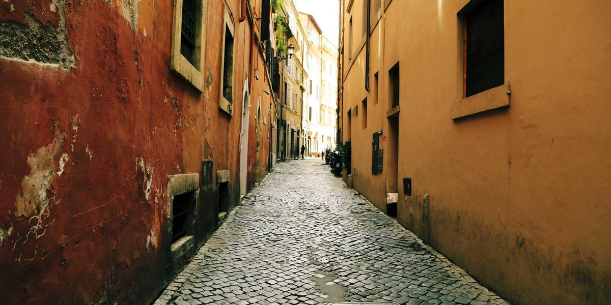
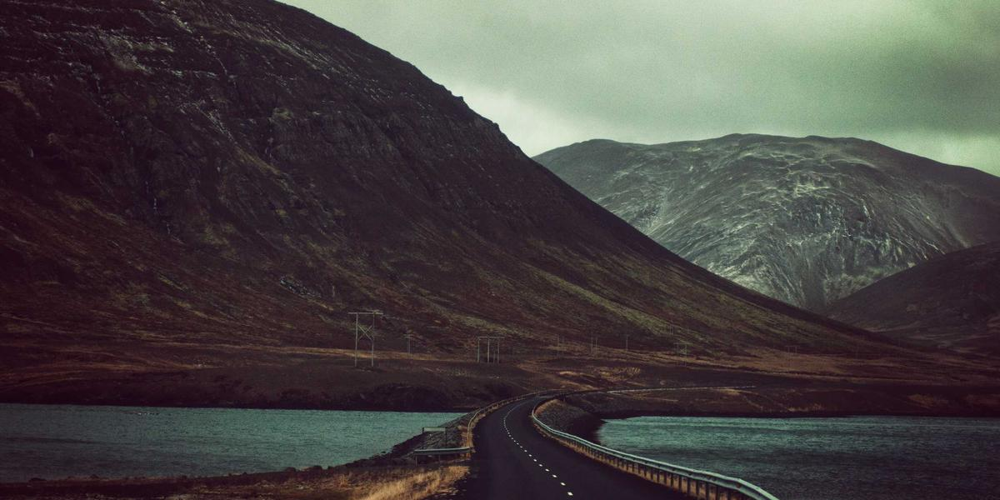

Day 2｜白山一里野溫泉滑雪場玩雪 → 住一晚
從金澤出發前往白山一里野滑雪場，這天主打玩雪、雪橇與溫泉放鬆。
交通：金澤飯店 → 白山一里野 → 溫泉住宿
不自駕、順路版本：TPE → KIX → 金澤 → 京都 → KIX → TPE。暖心爐火風格設計，適合家庭與朋友。
像圍在爐邊一樣溫暖的旅程設計，簡潔、視覺華麗。點選每日展開查看詳細行程與代表圖片。
從金澤出發前往白山一里野滑雪場，這天主打玩雪、雪橇與溫泉放鬆。

回到金澤市區慢遊兼六園與金澤城，午後參觀21世紀美術館。

早上近江町市場品嘗海鮮，中午手作金箔，下午東茶屋街散步，傍晚前往京都。
清水寺、二年坂、祇園與錦市場等京都經典散步路線。
京都半日活動後前往關西機場返回台北。